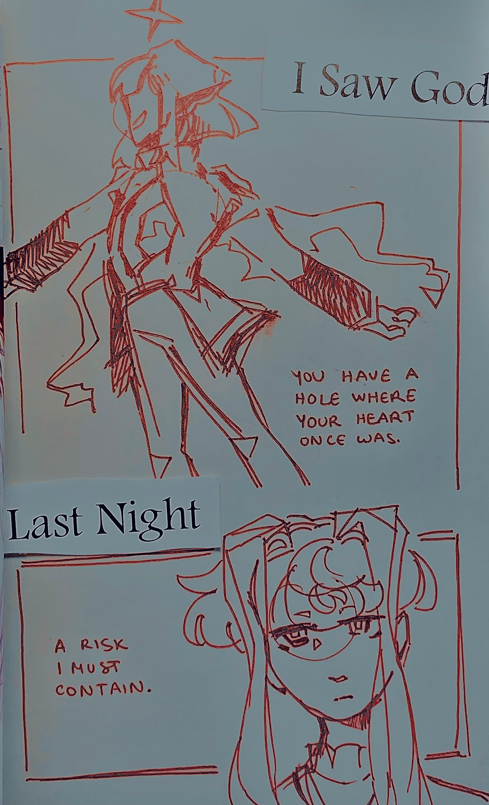

"the fox's wedding"
creation date: july
characters featured: lyre [left] archer [right]
y'know that one masa works design song? yea. tbf i don't really associate the fox's wedding w these characters, it was just what i was listening to as i was drawing, and it became a very short-lived inspo for this page. caption makes no sense as a result
the page looks OK but i think i drew archer's face too long lol, he looks abit older here than he actually is ;o;
also, slightly relevant bonus doodle !
lyre really saw the most morally unhinged man alive and went, "i can fix him."